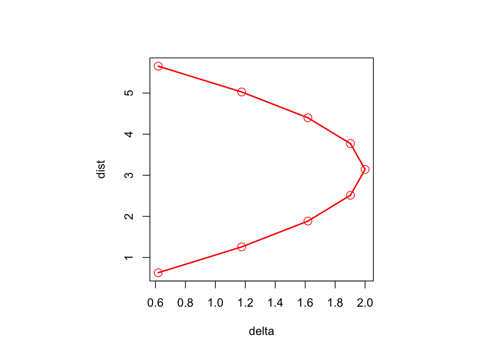

19 Nonmonotonic MDS
19.1 Filler
This chapter will discuss techniques in which the relation between dissimilarities and distances is not necessarily monotone (in as far as these techniques fit into the smacof framework). I have in mind the mapping of high-dimensional manifolds into low-dimensional Euclidean ones, in the spirit of Shepard and Carroll (1966). The prime examples are still cutting and unrolling the circle, the sphere, or the torus.
The dissimilarities define the high-dimensional space, the distances the low-dimensional space. The relation between distances and dissimilarities may not be functional, i.e. we can have \(F(D(X),\Delta)=0\) or \(\Delta\) could be a function of \(D(X)\).
In general, small distances in low-dimensional space are small distances in high-dimensional space, but large distances in low-dimensional space can be small distances in high-dimensional space. This suggests an inverse Shepard plot, with dissimilarity as a function of distance. Or \[ \sigma(X)=\sum\sum(\```{r echo = FALSE} source("loadMe.R") ``` delta_{ij}-f(d_{ij}(X)))^2 \]
Euclidean
\[ \sqrt{2-2\ \cos |i-j|\theta} \]
Circular
\[ |i-j|\frac{2\pi}{n} \] Linear \[ |i-j| \] ::: {.cell layout-align=“center”} ::: {.cell-output-display}  ::: :::
Quadratic
\(F(\Delta,D(X))=0\)
\[ a_1\delta_{ij}^2+a_2\delta_{ij} d_{ij}(X)+a_3d_{ij}^2(X)+a_4\delta_{ij}+a_5 d_{ij}(X)+a_6=0 \] \[ pd_{ij}^2(X)+2qd_{ij}(X)+r=p(d_{ij}(X)-q/p)^2+r-(q/p)^2 \] \(f(\Delta)=g(D(X))\)